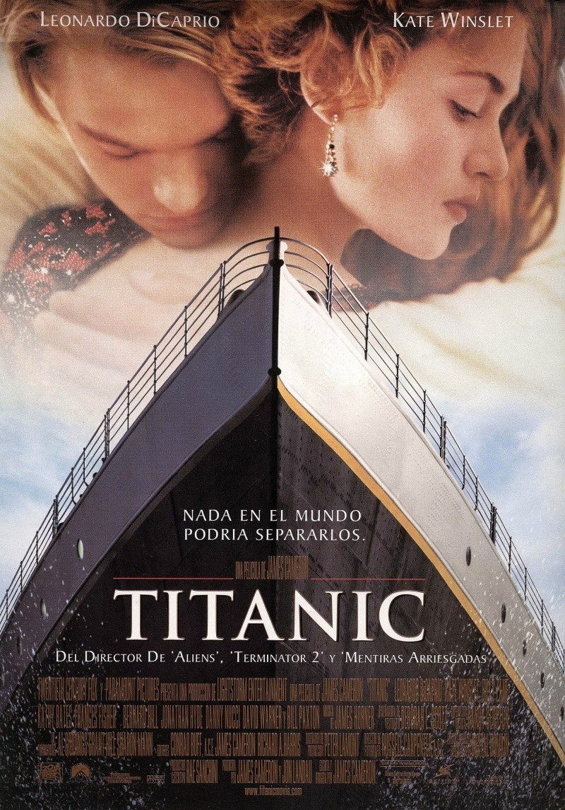

Top $10 Theater
 鐵達尼號（Titanic）—1997 《鐵達尼號》（英語：Titanic，中國大陸譯《泰坦尼克號》），1997年美國史詩浪漫的災難電影，由詹姆斯·卡麥隆 創作、編輯、製作、導演及監製，電影部分情節是根據1953年的同名電影改編。男女主角為李奧納多·狄卡皮歐、凱特·溫斯蕾。 其內容背景1912年鐵達尼號郵輪在其處女啟航時觸礁冰山沉沒的事件，及凱特·溫斯蕾與李奧納多·狄卡皮歐所虛構飾演的不同社會階層成員的戀愛故事。 柯麥隆的電影靈感是來自他對是次海難事件的迷戀，貫穿愛情故事，傳達悲劇的訊息——人類的失落。電影的製作在1995年開始， 柯麥隆拍攝鐵達尼號真實的沉船鏡頭，現代的場境則攝於科學研究船-克爾德什院士號（Akademik Mstislav Keldysh）及和平號潛艇， 詹姆斯·卡麥隆以此作為拍攝沉船的基地。鐵達尼號重建於墨西哥下加利福尼亞州的羅薩里多海灘市（Playas de Rosarito）， 大規模的模型和電腦合成圖像都用來模擬下沉的影像。 電影的資金來自派拉蒙電影公司及二十世紀福斯影片公司，以當時2億美元的預算，成為那時有史以來最昂貴的電影。 電影於1997年12月19日正式在全球各地上映，在商業上取得了巨大的成功，並獲得第70屆奧斯卡金像獎最佳影片、最佳導演獎等11項大獎。 本片是第一部達到10億美元票房大關的電影，全球票房收入達18億，並保持電影票房收入排行第一位，是隨後12年來最賣座的電影。 直至2010年1月26日《阿凡達》的上映，柯麥隆導演在2010年打破了自己在《鐵達尼號》的紀錄。 《鐵達尼號》在2012年4月4日以3D電影版本重新發布，為鐵達尼號沉船事件100周年作紀念。3D版本賺入3.436億美元， 使得《鐵達尼號》的總票房收入達到21.8億美元。《鐵達尼號》成為影史上第二部票房破20億美元的電影（第一部是《阿凡達》）。 通貨膨脹計算器（1997-2015，單位：美元）：